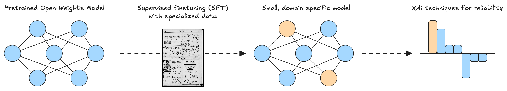

AI tools for historical documents in Malay
Our research group develops AI models to unlock historical research on Malay-language historical sources from Singapore and its neightboring region.
About
What is Jawi? Jawi is an adaptation of the Perso-Arabic script adapted for writing Malay and other languages across Southeast Asia. For centuries, it served as one of the primary writing system throughout the Malay-speaking world. From the late nineteenth century through the mid-twentieth century, Jawi was the dominant script for Malay-language journalism in Singapore and the broader region. These newspapers chronicle a transformative period in Southeast Asian history, documenting debates over nationalism, identity, and modernization. Yet despite their significance, these newspapers remain largely inaccessible to contemporary researchers.
Why do we need specialized AI models for Jawi? The shift to Latin script in the mid-twentieth century means that few scholars today can read Jawi fluently. And transliterating Jawi to the Latin script is not straightforward. Sometimes, vowels are not written down, and the meaning of a word depends on context. The word “بنتڠ” could mean both “bintang” (star) or “benteng” (fortress), depending on the context. This is the type of task where AI systems are potentially useful, as they can consider an entire sentence or passage and decode the context.
Commercial AI systems consistently fail to recognize Jawi. They also often hallucinate, confidently generating plausible-looking but entirely incorrect transcriptions that could mislead researchers and corrupt our historical record.
This is where homegrown innovation makes the difference. We are starting with SEA-LION (Southeast Asian Languages in One Network), a family of models developed by AI Singapore that were specifically designed to work with regional languages, including Malay. In contrast to the commercial platforms, the models developed by AI Singapore are “open-weights”. This means that researchers like us can download these models and change the “weights”—that is, the numbers that make these models work. Through a process called “supervised finetuning” (SFT), we recalibrate these weights to suit a specific task. To ensure high fidelity, every data point is independently evaluated by at least two experts. We also want our models to tell us when they are likely to be wrong. For this, we use a range of techniques from a field called Explainable AI (xAI) to determine when the results of our models are likely wrong. When this happens, we can direct our human experts to passages of particular difficulty, which might, for example, contain unusual words or names.
By developing reliable tools to transliterate, search through and analyze these newspapers, we make it possible to study this crucial period with unprecedented depth and scale. We are initially focusing on typeset print materials, but our goal is to also include lithographed and handwritten sources in the future.
People
Models
Datasets
Leaderboard
Our model outperformers both commercial and open-weights models on Jawi OCR.
| # | Model | CER↓ | Date |
|---|
Conference Presentations & Publications
Contact
Email: m.[escobar] at [nus].[com] | HuggingFace | GitHub